新JIS漢字で書いてみよう［１］
新JIS漢字で書いてみましょう。
Windows用のメモ帳やWordPad、Macintosh用のSimpleTextやJeditなど、一般的なエディターの多くで、新JIS漢字が使えます。
ここではまず「新JIS漢字総合索引」を使って、文字を探し、入力してみましょう。
新JIS漢字に対応したフォント、KandataとHabianの名称はともに、芥川龍之介の作品からとられました。
「かんだた」は『蜘蛛の糸』、「はびあん」は『るしへる』の主人公の名前です。
「かんだた」の「かん」、「はびあん」の「び」と「あん」は、共に第1第2水準にはなく、これまでは、彼等の名前をすっきりと表示することができませんでした。
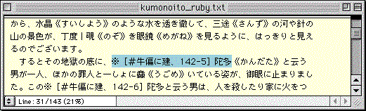
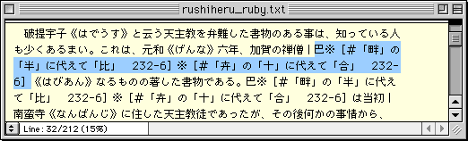
●青空文庫所蔵の、『蜘蛛の糸』と『るしへる』のテキスト版より。漢字のつくりを、苦労して説明してある。
この「かんだた」と「はびあん」を、新JIS漢字を使って表示してみましょう。
第1〜第4水準のすべての漢字を、簡単に見つけられるようにと考えて、「新JIS漢字総合索引」を用意しました。
「新JIS漢字総合索引」は、「部首・画数索引」、「音訓索引」と、付録の「記号一覧」からなっています。
「部首・画数索引」を用いれば、「何へんに何」といった文字の組み立てを手がかりに、漢字を探せます。
「音訓索引」では、読みをたよりに漢字をみつけられます。
「記号一覧」には、日本語の文脈中でよく使われる記号を、集めました。
青空文庫形式のテキストで使われる記号も、ここにおさめています。
「新JIS漢字総合索引」は、「青空文庫 「明日の硯箱」」に置いてあります。
示された手順に従って必要なものをそろえ、「新JIS漢字総合索引」を引き落としてください。
zipで圧縮された「新JIS漢字総合索引」のファイルを解凍し、現れたフォルダを開くと、「index.ttz」が入っています。
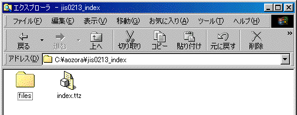
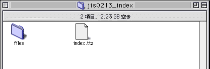
●上はWindowsの場合。下はMacintoshの場合。
Windowsの方は、「index.ttz」をダブルクリックして開いてください。
Macintoshの方は、「index.ttz」をT-Timeのアイコンにドラッグ＆ドロップしてください。
次のような「新JIS漢字総合索引」の表紙が現れます。
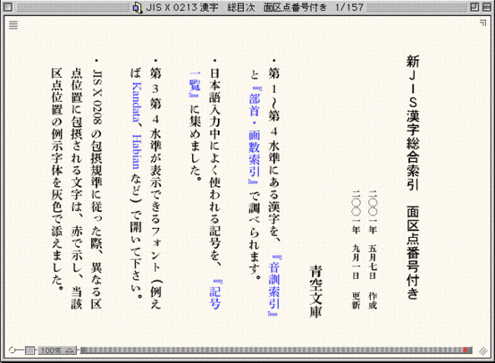
●「新JIS漢字総合索引」は、自由に使ってほしい。加工、再配布に際しても、青空文庫への連絡は必要ない。
Macintoshの方は、「index.ttz」の入っていたフォルダを確認してください。
アイコンの形が下のように変わっているはずです。
次回からは、このアイコンのダブルクリックで、「新JIS漢字総合索引」を開けます。
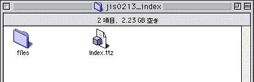
●「index.ttz」には、目次をまとめてある。「部首・画数索引」と「音訓索引」の本体、「記号一覧」は、「files」フォルダにおさめられている。
「部首・画数索引」で漢字を探す
「新JIS漢字総合索引」の表紙で「部首・画数索引」をクリックすると、「部首・画数索引」の表紙が現れます。
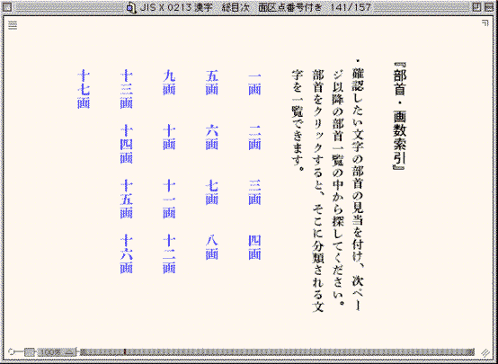
●青で表示されているのは、部首の画数見出し。例えば「彳」は、三画に分類されている。
まず「かんだた」の「かん」（「牛＋建」）を探してみましょう。
部首の「牛」へんは、四画です。
「部首・画数索引」の表紙で、「四画」をクリックすると、以下のような四画の部首のリストが現れます。

●部首のリストは、複数のページにまたがっている場合もある。最初のページで見つからなければ、次を探してみる。
二段目の左端に「93 牛」がありました。
ここをクリックすると、以下のように牛へんの漢字のリストが現れます。
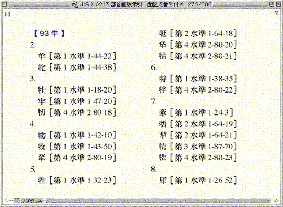
●「2.」「3.」「4.」と並んでいる数字は、部首以外の部分の画数を示している。
つくりの「建」は、九画です。
ページをめくって「9.」を確認すると、この項のはじめに「牛＋建」があります。
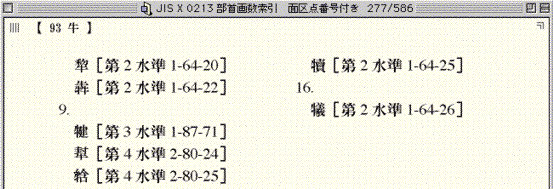
●キーボードの矢印キー「←」「→」を押すと、前後のページに進める。ページの左右にカーソルを持っていくと、矢印の形に変わるので、そこでクリックしても良い。
この「牛＋建」の字を、コピー＆ペーストでエディターに入力してみます。
まずエディターで「新規」のページを開き、フォントをHabianまたはKandataに設定しておいてください。
「部首・画数索引」に戻り、「牛＋建」の文字の上にカーソルを置きます。
その位置で、マウスのボタン（Windowsの場合は左ボタン）を押し、左から右、もしくは右から左にマウスを少しだけ動かして、下の図のように「牛＋建」を選択してください。
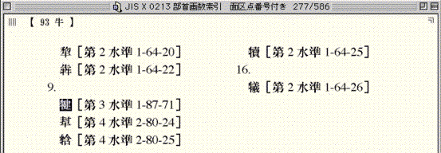
●なれないうちは、文字を選択するつもりで、ページをめくってしまうことも多いだろう。マウスを横方向に、わずかに滑らせるようにすると良い。
「牛＋建」を選択しようとしても、ページがめくれたりしてうまくいかないときは、T-Timeのページの左下にある小さな四角をクリックしてください。
右のように下向きの矢印が現れ、テキスト編集モードに切り替わります。
今度は、簡単に選択できるでしょう。
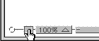
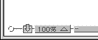
●矢印が表示された右の状態で、もう一度四角をクリックすると、矢印が消え、テキスト編集モードが解除される。
「牛＋建」が選択できたら、Windowsでは「Ctrl」と「C」、Macintoshではコマンドと「C」のキーを同時に押して、「牛＋建」をコピーします。
メニューの「編集」から、「コピー」を選んでもかまいません。
エディターのページに戻り、Windowsでは「Ctrl」と「V」、Macintoshではコマンドと「V」のキーを同時に押して、「牛＋建」をペーストします。
メニューの「編集」から、「ペースト」を選んでもかまいません。
続く「陀」と「多」は共に、第1水準の漢字です。
「MS-IME」や「ことえり」、「ATOK」といった仮名漢字変換モジュールからも、各モジュールの文字パレットからも、いつも通りのやり方で入力できます。
ただしここでは、練習のために「部首・画数索引」を使って入れてみましょう。
T-Timeでは、「Ctrl」と「B」を同時に押すことで（Windowsの場合）、もしくはコマンドと「B」を同時に押すことで（Macintoshの場合）、前に開いていたページに戻れます。
何度かこの操作を繰り返して、部首の画数見出しのある、「部首・画数索引」の表紙にもどってください。
「陀」の部首は、三画。三画の2ページ目の最後に、「（左）」を添えて「こざとへん」が示してあります。
「→170」とあるのは、本来「こざとへん」が、部首番号170の「阜」であることを表しています。
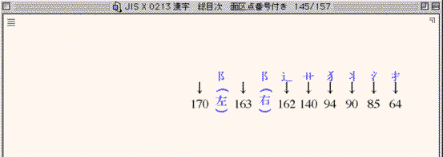
●同じ形が右に来る場合は、「おおざと（163 邑）」。
青で表示されたところをクリックして、「170 阜」を開いてください。
つくりの「它」は五画ですから、「5.」を探します。
同様に、「多」を「部首・画数索引」で探してみましょう。
三画の「夕」で「3.」をあたってください。
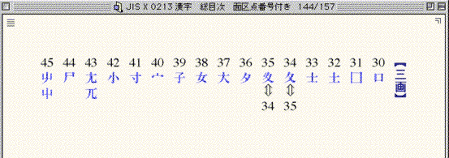
●三画の部首の一覧で、「36 夕」をクリックする。計216の部首分類は、康煕字典によっている。
「36 夕」の右に置かれている、「ふゆがしら（34 夂）」と「すいにょう（35 夊）」の下には、「⇔」に続いて互いの番号（35と34）が示してあります。
現在の字体からは部首がどちらか判断が付きにくいものに関しては、参照すべきもう一方の部首を、この形で示しました。
「74 月」で見つからないときは、「130 肉」も当たるといった具合に、一方で見つからない場合は、もう一方でも探してみてください。
続いて「はびあん」も入れてみましょう。
ここではあらかじめ答えを示してしまいますが、「巴（は）」の部首は、三画の「己」です。
このように部首を思い浮かべにくいものは、「音訓索引」で探すのが賢明でしょう。
続く「田＋比（び）」の部首は、「田」と浮かぶでしょう。
そこで五画「102 田」で探してみます。
残る「比」は五画。そこで「5.」を探してみると、灰色で「『田＋比』［第3水準1-86-44］→81比の5」と表示されています。
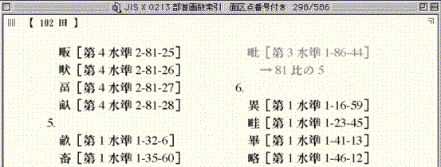
●部首を誤認しやすいと思われるものについては、灰色の文字で送り項目を立ててある。
「田＋比」の本当の部首は、部首番号81の「比」。
そこの五画が、正しい分類位置であることを、この形で表しました。
ただし、「田＋比」をコピーすることは、このページでできてしまいます。
目指す文字の上にカーソルを置き、マウスのボタンを横に滑らせるという同じ操作で、灰色の部分も選択可能です。
あらためて、「比」の項を開く必要はありません。
「合の下に廾（あん）」の部首は、「合」でしょうか「廾」でしょうか？
六画の部首リストを探しても、「合」はみつかりません。
「合」は部首ではないようです。
今度は三画で「廾」を探します。
「55 廾」があるので、その「6.」をあたってみてください。
「音訓索引」で漢字を探す
部首が思い浮かべにくいときや見つからないときには、「音訓索引」で探してみましょう。
「新JIS漢字総合索引」の表紙で「音訓索引」をクリックすると、「音訓索引」の表紙が現れます。
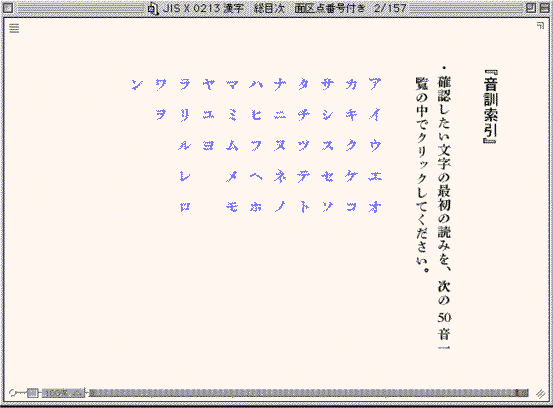
●青で表示されているのは、五十音の見出し。
先ほど部首を思い浮かべにくかった「巴（は）」を、「ハ」の見出しをクリックして探していきましょう。
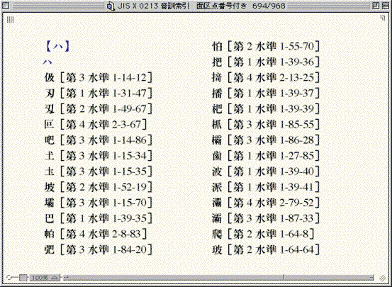
●「ハ」の1列目に、「巴」を確認できる。
「巴」は「ともえ」とも読みます。
「音訓索引」の表紙で「ト」をクリックし、ページをめくって「トモエ」を探せば、そこでも「巴」を見つけられます。
第1第2水準の漢字と、第3第4水準の漢字を区別する
見出しの漢字に続く括弧の中には、第1〜第4水準の区分と、面区点番号が示してあります。
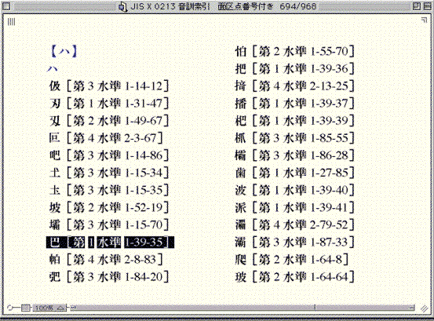
●「巴」は第1水準にあり、面区点番号は1-39-35。旧JIS漢字では、面を略し、区点番号39-35と表す。
規格としては正式に定められたものの、新JIS漢字は未だ、普及しているとは言えません。
誰にでも確実に読んでもらえると期待できるのは、第1第2水準の範囲の漢字に限られます。
「新JIS漢字総合索引」を使えば、第3第4水準の漢字も簡単に見つけられますが、一般的な文書の作成は、しばらくのあいだ第1第2水準の範囲内で行うのが賢明です。
青空文庫でも当面はこれまでどおり、第1第2水準の範囲でファイルをつくっていきます。
「工作員マニュアル」に規定されているとおり、青空文庫の入力では、第1第2水準にない漢字は、外字注記します。
底本の文字が、仮名漢字変換モジュールからすぐに出てこないときは、「新JIS漢字総合索引」を開いてください。
問題の字が見つかって、第1第2水準にあるとわかれば、コピー＆ペーストで入力します。
第3第4水準にあれば、「第1第2水準にはないのだ」と確認できますから、自信を持って外字注記してください。
中国の地名や人名を除けば、第3第4水準にもない漢字には、めったにぶつからないはずです。
使い分けが必要な赤で示した漢字
「新JIS漢字総合索引」に収録された漢字には、赤で示されたものがあります。
「音訓索引」で「ア」の項を開いてください。
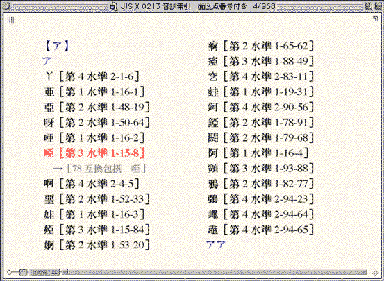
●「口＋亞」が赤く示され、下には矢印に続いて、似通った形の字が灰色で添えてある。
もしもあなたが、新JIS漢字で文書を作ろうと考えているのなら、第3第4水準の漢字は、当然使ってかまいません。
「口＋亞」を「新JIS漢字総合索引」からコピーし、作成中の文書にペーストしてください。
ただしあなたが、旧JIS漢字の範囲で作業しているのなら、第3第4水準の漢字は使えません。
青空文庫のファイルは旧JIS漢字の範囲で作成しますから、例えば「口＋亞」は使えないことになります。
では青空文庫のファイルをつくる際、「口＋亞」は外字注記するべきなのでしょうか。
「工作員マニュアル」には、「第1第2水準にない漢字は、外字注記する」と書かれています。
先ほども、そのように説明しました。
ただし、第3第4水準にある漢字でも、「新JIS漢字総合索引」で赤く表示された「口＋亞」などに限っては、外字注記は行いません。
下に矢印付きで添えられた漢字、この場合でいえば、「唖」で入力します。
底本にある「口＋亞」は、「唖」で入れてください。
旧JIS漢字の範囲内で定められた、文字の取り扱いに関する約束事では、「口＋亞」などの赤で示した漢字は、灰色で添えた「唖」などのコードで入力してかまわないと定められています。
微妙な字体差によって、コードを区別するのかしないのかという約束事を、JIS漢字コードでは「包摂規準」と呼んでいます。
「包摂規準」に関しては、次の「新JIS漢字で書いてみよう［２］」で、詳しく説明します。
「記号一覧」で記号を探す
日本語の文脈の中でよく使われる記号を、『記号一覧』にまとめました。
「新JIS漢字総合索引」の表紙で「記号一覧」をクリックすると、「記号一覧」の表紙が現れます。
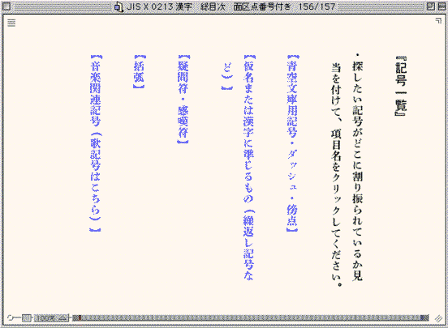
●目指す記号がどこに分類されているか見当を付けて、青で示された見出しをクリックする。
青空文庫形式のテキストを作る際に使用する、「ルビ用括弧」「被ルビ文字とその他の境」「入力者注」「外字代替用記号」は、「青空文庫用記号・ダッシュ・傍点」で探してください。
旧字旧仮名の底本などによく見られる各種の記号が、新JIS漢字コードに入りました。
繰り返し記号のくの字点は、「仮名または漢字に準じるもの（繰返し記号など）」におさめてあります。
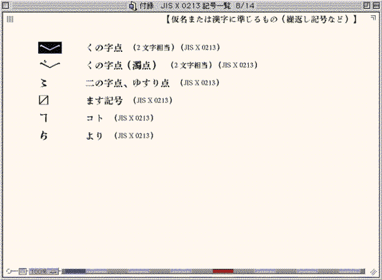
●「記号一覧」は横組みとしたため、くの字点もここでは、横で表示されている。ただしこの記号は、縦組み中で使われる場合がほとんどで、規格票でも縦組み用の字体のみが例示されている。上、下の二つの部分からなっており、必ず組み合わせて使用する。
新JISに盛り込まれた記号には、名称の後に「（JIS X 0213）」と添えてあります。
もしもあなたが、新JISで文書を作ろうと考えているのなら、「（JIS X 0213）」と添えてある記号も使えます。
けれどあなたが、旧JISの範囲内で作業しているのなら、これらの記号は使えません。
青空文庫の入力には、「（JIS X 0213）」と添えてある記号は使わないでください。
底本にくの字点があれば、工作員マニュアルの規定に従って、「／＼」と入力します。
濁点付きのくの字点は、「／″＼」と入れてください。
・「X0213サポート」をオンにした状態で「自動明朝」を選ぶと、T-Timeは第1第2水準を秀英太明朝、第3第4水準をKandataで表示しようとします。「新JIS漢字総合索引」を引き落とした段階では、フォントは「自動明朝」に設定されていますから、「秀英太明朝＋Kandata」の組み合わせが優先して選ばれます。「自動ゴシック」にしたときほどはっきりはしていませんが、注意してみれば、第1第2水準は太めに、第3第4水準は細目に表示されているのがわかるでしょう。
・秀英太明朝は、次章の「【注意が必要な「包摂の扱いが変わる文字」】」で述べる78互換包摂の29文字を、いわゆる康煕字典体でデザインした特殊なフォントです。これらの文字に関して新JIS漢字では包摂の扱いが変わり、29字の康煕字典体は独立した別のコードを与えられました。
加えてT-Timeの「自動明朝」が、秀英太明朝とKandataを組み合わせるために、78互換包摂の29文字は従来のコード（秀英太明朝で表示）でも、新しく与えられた第3水準のコード（Kandataで表示）でも、ともに康煕字典体で表されてしまいます。
この不都合を解消するために、「新JIS漢字総合索引」では、第1第2水準の29文字についていはフォントをKandataに指定し、簡易字体を表示させる工夫を行っています。
・2000年8月25日に作成した、「新JIS漢字総合索引」には、音訓索引に二箇所、誤りがありました。
2001年5月7日、「面区点番号付き」の作成に際して、この誤りを、以下のとおり修正しました。
「イシミツ」の項に、二つの漢字を独立して掲げていましたが、四字からなる熟語にあらためました。
「ハサミムシ」の項にあった熟語の重複を省き、余分な文字列（cc）を除きました。
・2001年9月1日に作成した版からは、「面区点番号付き」のみを公開する形にあらためました。
戻る。
続きを読む。